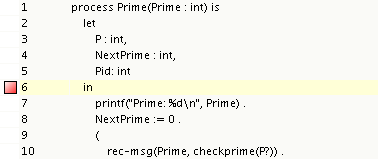
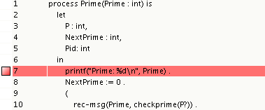

The Toolbus Viewer allows you to set one or multiple breakpoints in the sourcecode. When a script is executed, it will stop at a breakpoint so you will be able to observe the internal state of the script at that moment.
A breakpoint can be set by clicking left (before the linecount) of a line of code in the source view. A red marker will appear to visualize the breakpoint has been set. Now when the "Run" button is pressed, the Toolbus Viewer will stop the execution of the script when it reaches the breakpoint.
Note that a breakpoint must be set on a statement. If not, the Toolbus Viewer ignores the breakpoint and continues the execution of the script.

This is an example of a wrong breakpoint since it's declared on a nonstatement

This is an example of a good breakpoint since it's declared on a statement
Besides setting breakpoints on codelines, it is also possible to set a breakpoint on a process. Now whenever a codeline from a process with a breakpoint is executed, the Toolbus Viewer stops the execution of the script. A breakpoint on a process can be set by clicking in the breakcolumn of the Process list. A red marker appears to visualize the breakpoint has been set. Now when the "Run" button is pressed, each time a line of code from the selected process is executed, the Toolbus Viewer will stop the execution of the script.
When you want to remove a breakpoint, simply click on the red marker and the breakpoint will be unset. This works the same for both the Source view as the Process list view.